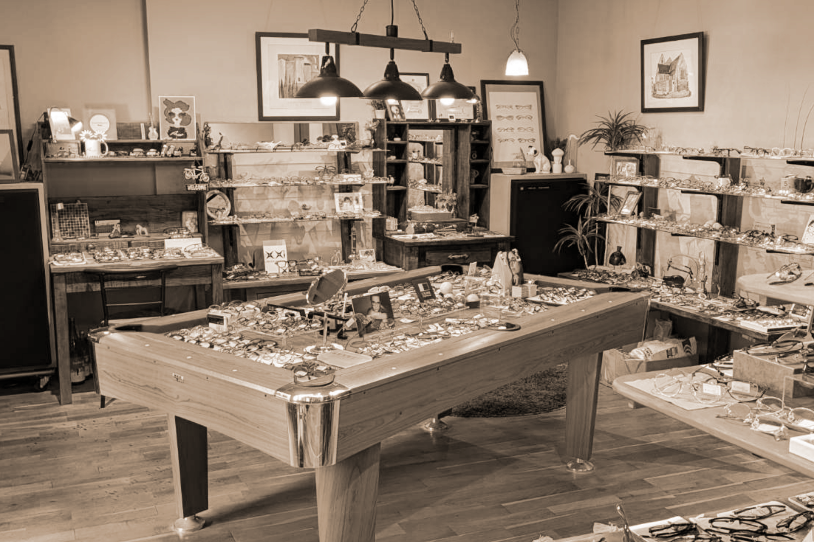
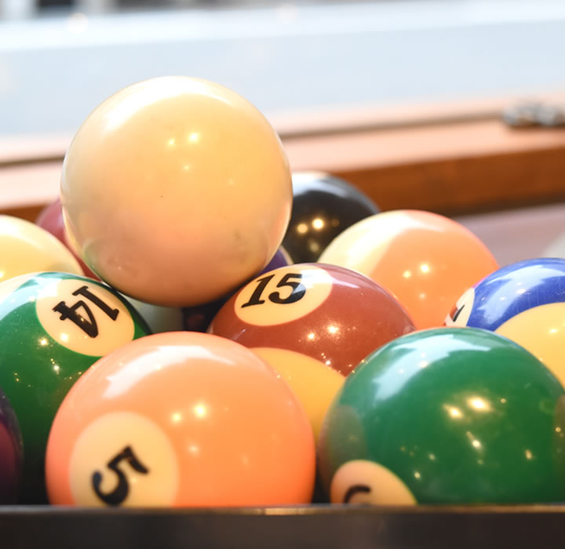

GALLERY

- 
１級眼鏡作成技能士在籍
「可愛いけれど、甘すぎない。ほんの少しの色気も取り入れて。」
デザイナーの川上氏が様々なものからインスピレーションを受け造り上げた、アクセサリーのような眼鏡。
２人の女性デザイナーにより２００２年に設立されたデンマークのブランド。 美しいニュアンスとユニークなデザインを組み合わせ、個性的で時代を超越したスタイル。
公式サイト▶アメリカ・LAを拠点に、デンマーク出身デザイナーが米国的クラシカルに 北欧の洗練さをプラスした上、 made in japan の技術を融合させたブランド。
「豊富な色柄と美しい艶、そして温かみのある質感をいかにフレームに仕立てるか」がテーマのブランド。 フィット性の高いパッド、フィッティングを容易にするための加工など、掛け心地の良さを追求。
公式サイト▶２人のアメリカ人により１９９９年、ニューヨークで設立。 クラシックでありながらミニマリストの美学を維持し、 スタイル、フィット感、パフォーマンスを向上させるための革新を追及。
公式サイト▶「 有形無形 」をコンセプトに目に見えないものや 形のないものを大切に丁寧にデザインされたブランド。
公式サイト▶「 less than human 」から名称を変えたが、独自の世界観はそのままに デザイナー甲賀氏が生み出す唯一無二のブランド。
公式サイト▶日本の美を、デザインと機能美で上限した 温故知新の技術が息づくブランド。
公式サイト▶デザイナーであるヒューゴ氏の独創性にあふれたデザインが魅力のフランスのブランド。 ファッション性を前面に押し出し、真に自分を表現したい人のための眼鏡。
公式サイト▶「実践的かつ自然体の眼鏡」がコンセプトのブランド。 厚み3.5mmの薄いアセテート生地やβチタンを使用することにより軽量で快適な掛け心地を実現。
公式サイト▶
デザイナー影郎氏が「筆を持つのも芸術、楽器を持つのも芸術。手段は違っても目指すものが変わらないのが芸術」 という持論のもと生み出す数々の作品。
シンプルな構造でラインを魅せるフランスのブランド。 ベーシックで美しいフレームデザインを大切にしながら、 スクーターや花など人々をワクワクさせるようなコレクションも展開。
公式サイト▶基本理念は「Design プラス Something」。 クラシカルからポップまで独自のアプローチで表現するブランド。 メタルフレームの塗装はほぼ特注カラーで一本一本、職人が手作業で色付け。
公式サイト▶「something that makes you say "OH!"」 新潟県三条市にてデザイナー兼職人のクリス氏が手掛けるブランド。 イタリア製のアセテート生地を素材に「遊び心を形にする」眼鏡作り。
公式サイト▶ヤスノリ眼鏡店では年に２回、春と秋に「メガネメイクイベント」を開催しております。
プロのメイクアップアーティストがパーソナルカラーと骨格診断を基に眼鏡に合ったメイク方法を伝授いたします。
そして実際にお似合いになるメガネデザインをセレクトさせて頂き、
自身を客観的に見る為にプロフォトグラファーに写真を撮ってもらうメガネモデル体験をして頂きます。
（お写真は後日お送りいたします）
メガネがウィークポイントではなくイメージアップアイテムであり、 ファッションの一部であることを体感して頂くイベントです。
ヤスノリ眼鏡店では着物と最新のメガネデザインとの調和を目指しています。
着物ならば裸眼のほうが。。。というのは昔の考え。
女性スタッフが、主に日曜日に着物で接客をして、お着物にも合う眼鏡をご提案させていただき、
多くの着物女子に喜んで頂いております